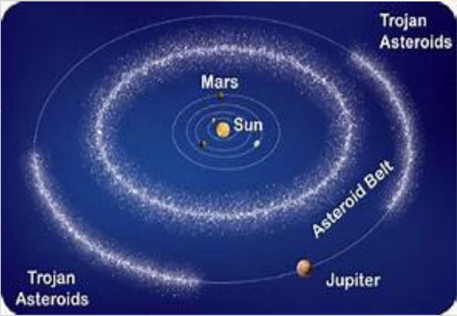
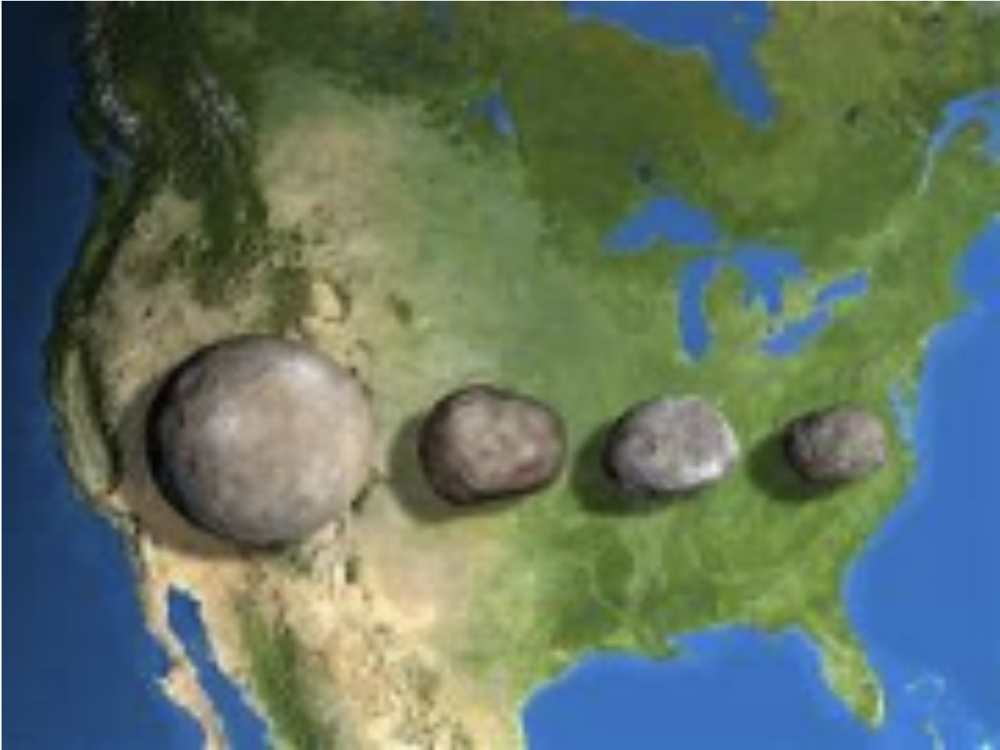
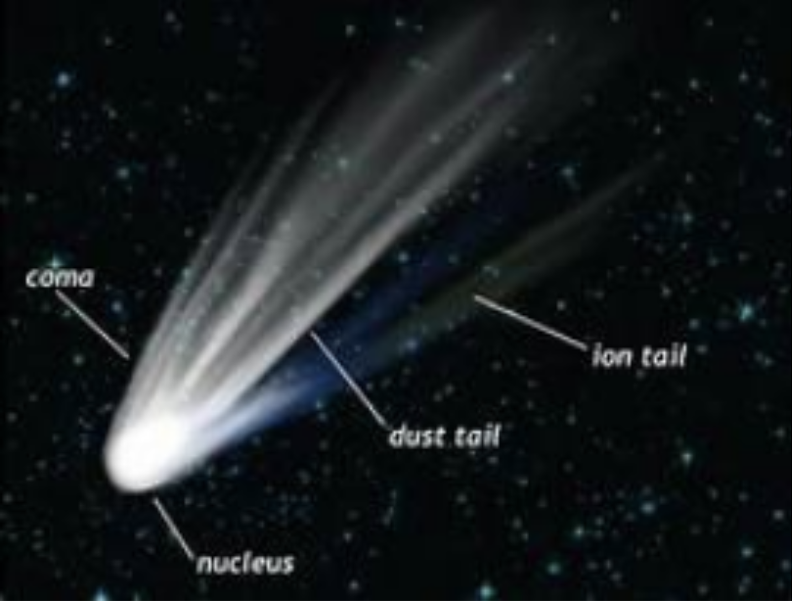
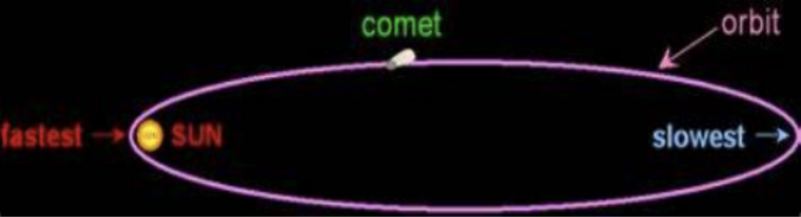

Astronomy • Geology
ASTEROIDS AND COMETS: Meet the building blocks of our planet!
Asteroids:
In a belt between Mars and Jupiter , millions of rocks known as asteroids hurtle around. These are also prominent in the orbit of Jupiter, known as the ‘Trojans’. Ranging from little pebbles to giant monsters, we receive tiny meteorites ( fragments of asteroids ) each year, all accumulating to about 17,000 annually.
These are leftovers from the cloud of rubble which gave birth to the planets , at the dawn of the Solar System. Technically speaking, without these , I wouldn’t be writing this right now! These are also made from the collision of extra-terrestrial objects . All of these have their own orbits around the sun , spinning as they go. Some of these can be very large , called dwarf planets (or minor planets , if they are not that big). Some examples are Ceres , Pallas , Vesta and Hygeia. Large asteroids , though, are very rare and only 26 are known to exceed 200 km wide.
HERE ARE SOME DIAGRAMS TO HELP EXPLAIN THE ABOVE:
The asteroid belt and the Trojans’ position in the Solar system:

The 4 largest asteroids in the solar system in comparison to America , left to right are Ceres , Pallas , Vestas , and Hygeia.

NUMBER CRUNCHING
2001 -
the year of the first soft landing on an asteroid.
2069 -
the next time Toutatis (a 5 km wide asteroid shaped like a potato) will be close to our planet.
950 -
the width of Ceres in kilometers , the largest asteroid known.
4 -
the value in percent of the mass of the whole asteroid belt in comparison to the Moon.
Comets:
Strange but beautiful , comets are like stars with glowing tails . Occasionally , they enter the rocky planets and return back to where they started. These phenomena have been understood as bad omens and have puzzled astronomers for centuries. These are left over from the end of the Oort Cloud - the mass of the ice , rock and various different gases at the end of the Solar System , pelting into the inner planets as they near the Sun. As they get closer , the ice starts melting , starting to form a gas tail( also known in a more complex way as an ion tail), always pointing away from the Sun . However , all the time it has been orbiting the Sun , it always has a dust tail which shows wherever the comet goes . An illusion when it is viewed by the naked eye , it is always behind the comet’s posterior as opposed to away from the sun.
Here’s a quick diagram to show how a comet looks like :

Here’s a diagram to show the orbit of a comet. As you can see , it gets very close to the Sun at one point.

NUMBER CRUNCHING
4.6 -
The amount of billion years there are in an average comet’s life
570 -
how many million km long the largest known comet's tail was.
1 -
how many trillion comets are in the Oort Cloud..
2014 -
the year when the most studied comet - 67P - had a probe landed on.
The Late Heavy Bombardment :
The Late Heavy Bombardment was a period of time when Jupiter migrated, so the inner planets were pelted with asteroids and comets, as the friction of the Solar System’s gas disk was pulling Jupiter inward, but the gravitational link with Saturn was more influential, causing Jupiter to eventually reverse and move outward. In the process, the giant planets interacted with a massive belt of leftover rocks and ice until the surrounding debris was cleared, so they finally settled into stable orbits. This movement created a massive instability for the asteroids and comets, causing them to fly into the inner planets. This, however, is one of the many theories that exist for the topic.